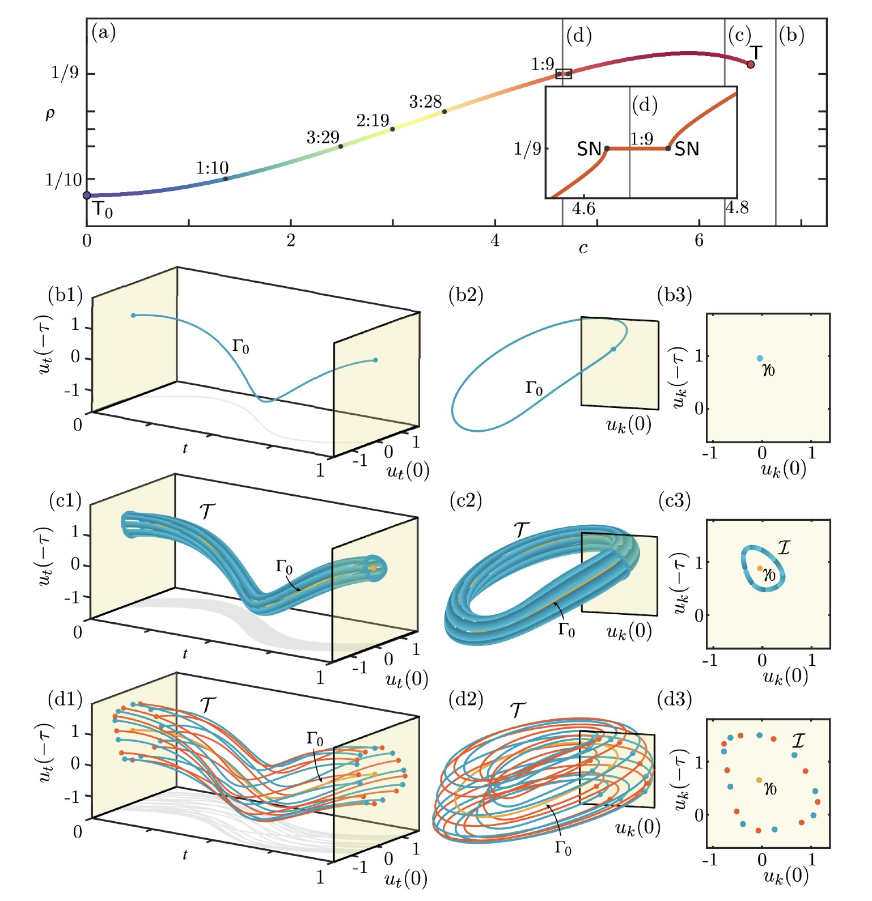
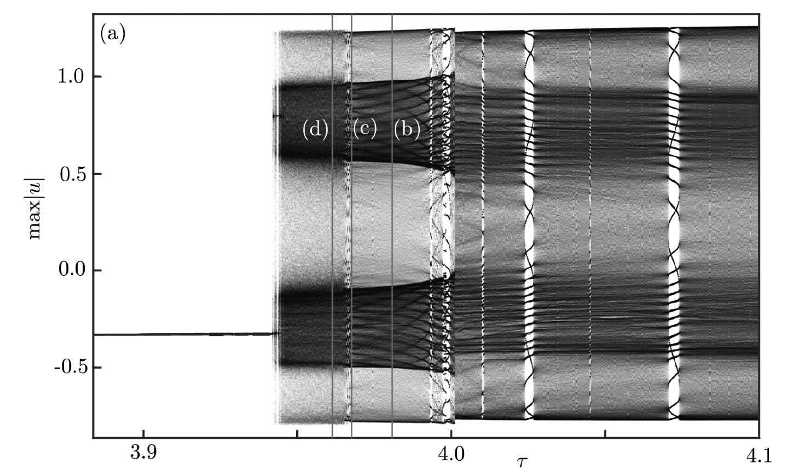
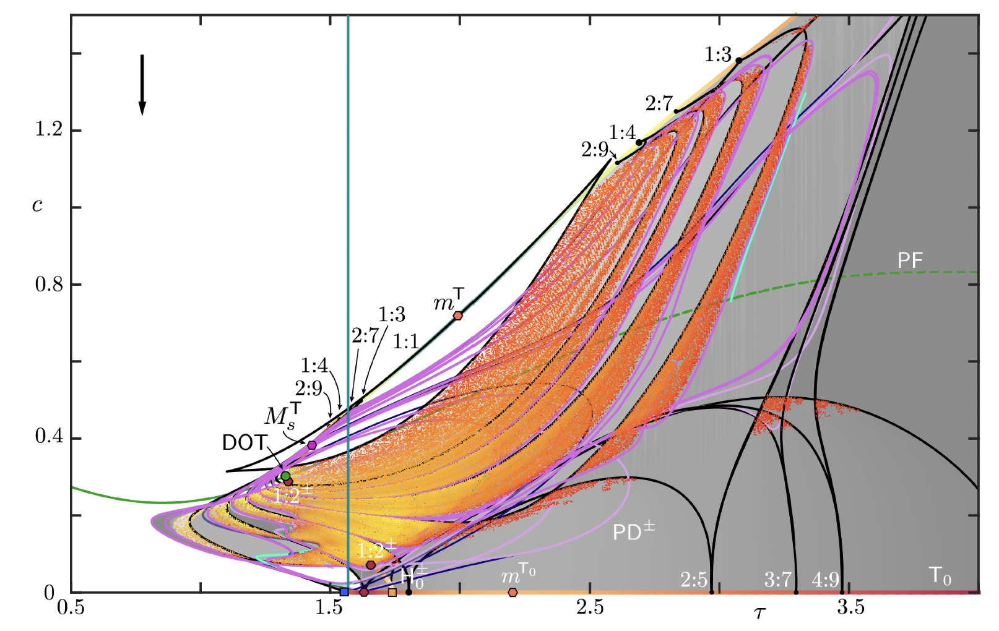
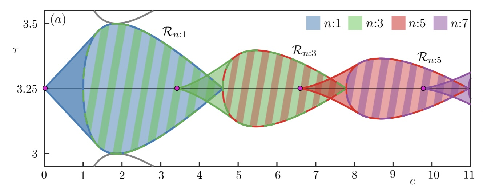

PROJECTS
Julia code to compute rotation numbers of a periodically forced delay differential equation

Compute local maxima of a delay differential equation

Current Working Project
Comprehensive bifurcation analysis of the pfSS model

Generalization of Feedback with implicit state-dependent delay in a conceptual model of El Niño
Generalization of Seasonal forcing dominated dynamics of a piecewise smooth Ghil-Zaliapin-Thompson ENSO model
